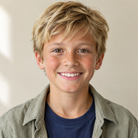
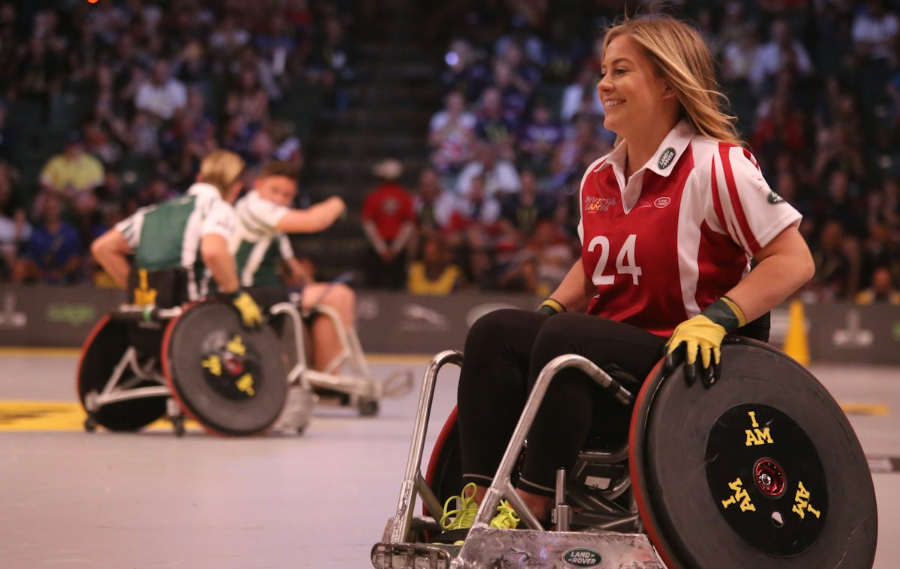
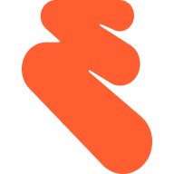

Lucía
10 años
- Le encanta el baloncesto
- Va en silla de ruedas
Siempre.
10 años
«Por las tardes está sola…»
Desanimada. Callada.
1 de cada 2
personas con discapacidad sufre soledad no deseada
Fundación ONCE · Observatorio de Soledades, 2025
Falta de ganas. Falta de entorno.

No te adaptas tú. Las oportunidades se adaptan a ti.

Su primera canasta.
Vuelve a casa con nuevos amigos.

EventbriteNo te quedes en el banquillo
← → para avanzar · F pantalla completa · H oculta los controles